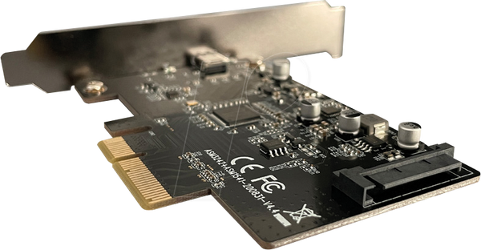

Définition de l'ESP32
L'ESP32 est un microcontrôleur développé par la société Espressif. Il est particulièrement apprécié pour sa connectivité Wi-Fi et Bluetooth intégrée, ce qui en fait un excellent choix pour des projets d'Internet des Objets (IoT), de domotique, et bien plus encore. Grâce à ses capacités avancées, l'ESP32 peut être utilisé dans des applications complexes nécessitant une communication sans fil.
